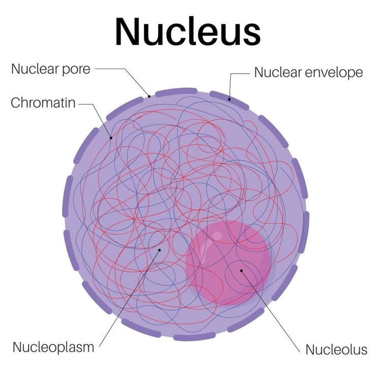

🧬 Nucleus
The control centre of the cell that stores genetic material and regulates all cellular activities.
Introduction
The nucleus is one of the most important cell organelles. It is usually the largest organelle in a eukaryotic cell and acts as the control centre of the cell. The nucleus controls growth, metabolism, reproduction and all other cellular activities.
The nucleus is enclosed by a double membrane called the nuclear membrane or nuclear envelope. This membrane contains tiny openings called nuclear pores, which allow the exchange of materials between the nucleus and the cytoplasm.
Inside the nucleus is a jelly-like substance called nucleoplasm. It contains thread-like structures known as chromatin, which condense to form chromosomes during cell division. Chromosomes carry genes that are responsible for the inheritance of characteristics from parents to offspring.
The nucleus also contains one or more dense spherical bodies called the nucleolus. The nucleolus is responsible for the formation of ribosomes, which help in protein synthesis.
Functions of the Nucleus
- Controls all activities of the cell.
- Stores hereditary information in the form of DNA.
- Controls cell growth and reproduction.
- Directs protein synthesis through genetic information.
- Transfers hereditary characters from parents to offspring.
📌 Key Points
- The nucleus is the control centre of the cell.
- It is surrounded by a double membrane called the nuclear membrane.
- The nucleus contains nucleoplasm, chromatin and nucleolus.
- Chromatin forms chromosomes during cell division.
- Chromosomes contain genes that carry hereditary information.
📝 Remember
Nucleus = Control Centre of the Cell
Chromosomes contain genes, and genes carry hereditary characters.
🎯 JKBOSE Exam Point
The following questions are commonly asked in JKBOSE examinations:
- Define nucleus.
- Why is the nucleus called the control centre of the cell?
- Name the parts of the nucleus.
- What is the function of the nucleolus?
- What are chromosomes and genes?
- State any five functions of the nucleus.

Figure 1.7 — Structure of the nucleus showing the nuclear membrane, nucleolus, chromatin and nuclear pores.
❓ Practice Questions
- What is the nucleus?
- Why is the nucleus called the control centre of the cell?
- Write the functions of the nucleus.
- What are chromosomes?
- Differentiate between chromatin and chromosomes.
- What is the function of the nucleolus?